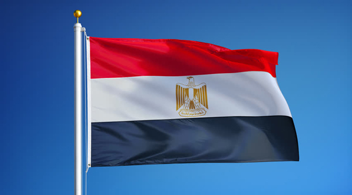
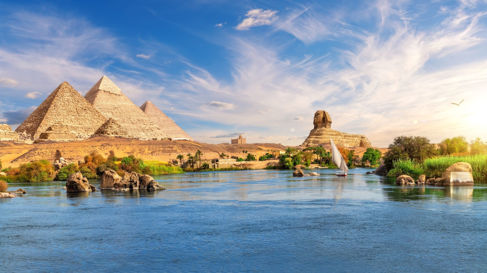

Egypt (Arabic: مصر Miṣr [mesˁr] ⓘ, Egyptian Arabic pronunciation: [mɑsˤr]), officially the Arab Republic of Egypt, is a country spanning the northeast corner of Africa and southwest corner of Asia via the Sinai Peninsula. It is bordered by the Mediterranean Sea to the north, the Gaza Strip of Palestine to the northeast, the Red Sea to the east, Sudan to the south, and Libya to the west; the Gulf of Aqaba in the northeast separates Egypt from Jordan and Saudi Arabia. Cairo is the capital, largest city, and leading cultural center, while Alexandria is the second-largest city and an important hub of industry and tourism.[20] At approximately 107 million inhabitants, Egypt is the third-most populous country in Africa and 14th-most populated in the world. Egypt has one of the longest histories of any country, tracing its heritage along the Nile Delta back to the 6th–4th millennia BCE. Considered a cradle of civilisation, Ancient Egypt saw some of the earliest developments of writing, agriculture, urbanisation, organised religion and central government.[21] Egypt was an early and important centre of Christianity, later adopting Islam from the seventh century onwards. Cairo became the capital of the Fatimid Caliphate in the tenth century and of the subsequent Mamluk Sultanate in the 13th century. Egypt then became part of the Ottoman Empire in 1517, until its local ruler Muhammad Ali established modern Egypt as an autonomous Khedivate in 1867. The country was then occupied by the British Empire along with Sudan and gained independence in 1922 as a monarchy.
a photo of the Egyptain flag
a photo of the Nile river viewpoint
